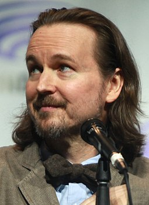
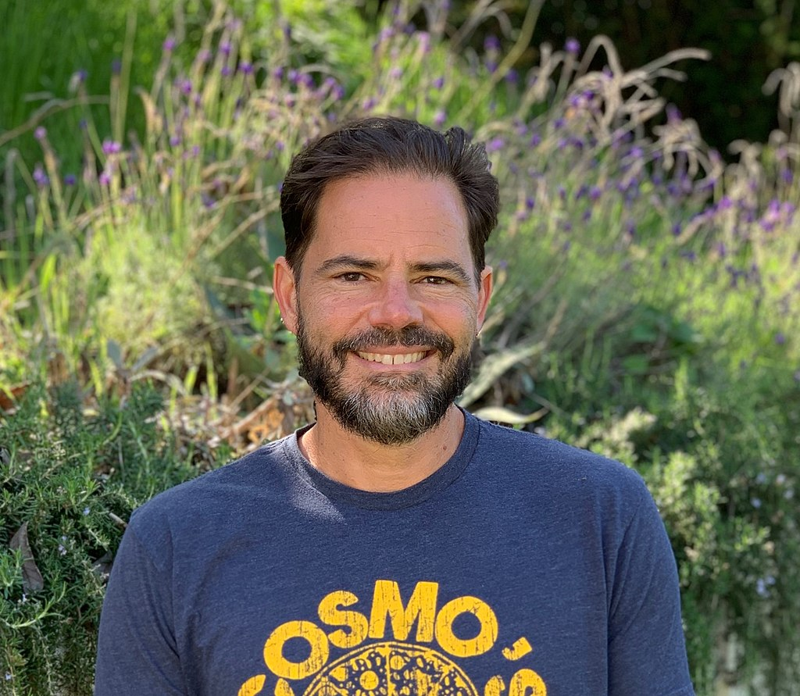
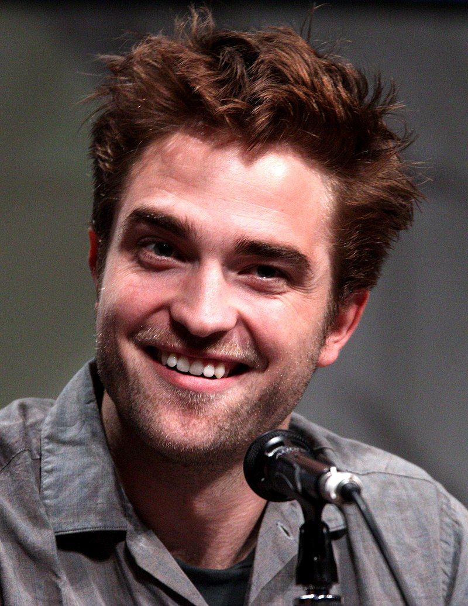
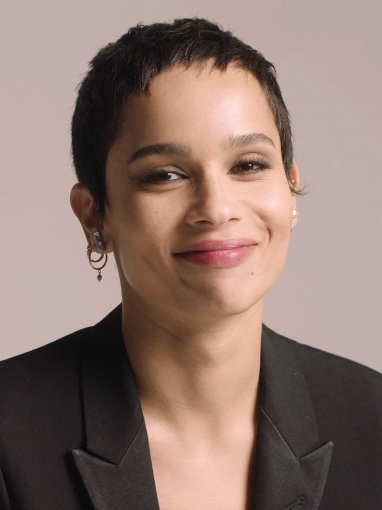
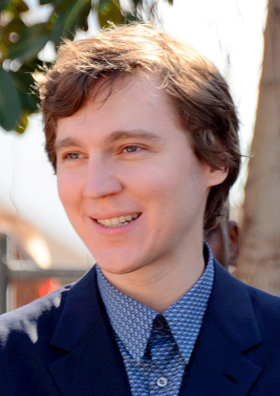
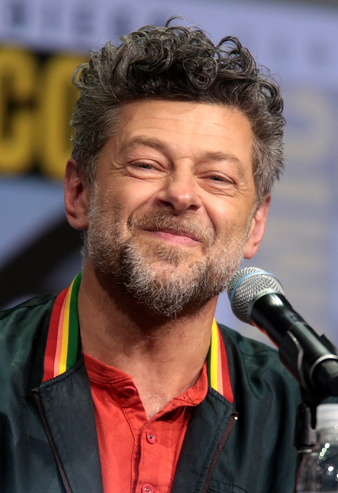
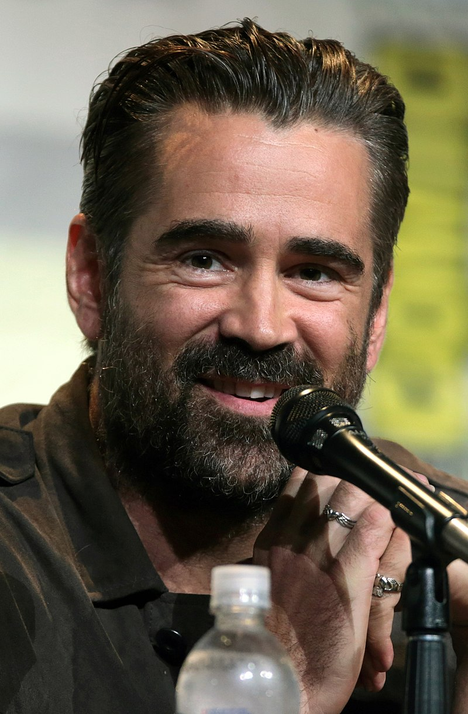
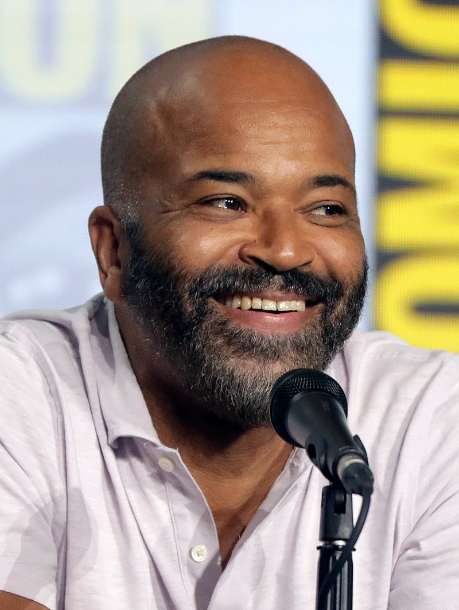
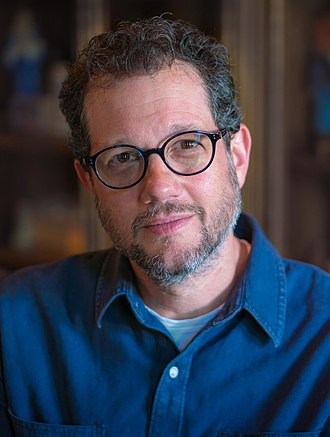

The Batman (2022)
Movie Review ~ Ankan Ray
The Batman
The Batman is a 2022 American superhero film based on the DC Comics
character Batman. Produced by Warner Bros. Pictures, DC Films, 6th &
Idaho, and Dylan Clark Productions, and distributed by Warner Bros.
Pictures, it is a reboot of the Batman film franchise. The film was
directed by Matt Reeves, who wrote the screenplay with Peter Craig. It
stars Robert Pattinson as Bruce Wayne / Batman alongside Zoë Kravitz,
Paul Dano, Jeffrey Wright, John Turturro, Peter Sarsgaard, Andy Serkis,
and Colin Farrell. The film sees Batman, who has been fighting crime in
Gotham City for two years, uncover corruption while pursuing the Riddler
(Dano), a serial killer who targets Gotham's elite.
| Directed by |
Written by |
Starring |
Run time |
Budget |
Box Office |
| Matt Reeves |
Matt Reeves
Peter Craig |
Robert Pattinson
Zoë Kravitz
Paul Dano
Jeffrey Wright
John Turturro
Peter Sarsgaard
Andy Serkis
Colin Farrell
|
176 minutes |
$185 - 200 million |
$770.3 million |
|  |

|
| Matt Reeves |
Peter Craig |
The Plot
On Halloween, Gotham City mayor Don Mitchell Jr. is murdered by a masked
psychopath calling himself the Riddler. Reclusive billionaire Bruce
Wayne, who has operated for two years as the vigilante Batman,
investigates the murder alongside the Gotham City Police Department
(GCPD). Lieutenant James Gordon discovers a message that the Riddler
left for Batman. The following night, the Riddler kills commissioner
Pete Savage and leaves another message for Batman. Batman and Gordon
discover that the Riddler left a thumb drive in Mitchell's car
containing images of Mitchell with a woman, Annika Kosolov, at the
Iceberg Lounge—a nightclub operated by the Penguin, mobster Carmine
Falcone's lieutenant. While the Penguin pleads ignorance, Batman notices
that Selina Kyle, Annika's roommate and friend, works at the club as a
waitress. When Annika disappears, Batman sends Selina back to the
Iceberg Lounge for answers and discovers that Savage was on Falcone's
payroll, as is district attorney Gil Colson. The Riddler abducts Colson,
straps a timed collar bomb to his neck, and sends him to interrupt
Mitchell's funeral. When Batman arrives, the Riddler calls him via
Colson's phone and threatens to detonate the bomb if Colson cannot
answer three riddles. Colson refuses to answer the third—the name of the
informant who gave the GCPD information that led to a historic drug bust
ending mobster Salvatore Maroni's operation—and dies. Batman and Gordon
deduce that the informant may be the Penguin and track him to a drug
deal. They discover that Maroni's operation transferred to Falcone, with
many corrupt GCPD officers involved. Selina inadvertently exposes them
when she arrives to steal money and discovers Annika's corpse in a car
trunk. After a car chase, Batman captures the Penguin but learns he is
not the informant. Batman and Gordon follow the Riddler's trail to the
ruins of an orphanage funded by Bruce's murdered parents, Thomas and
Martha Wayne, where they learn that the Riddler holds a grudge against
the Wayne family. Bruce's butler and caretaker, Alfred Pennyworth, is
hospitalized after opening a letter bomb addressed to Bruce. The Riddler
leaks evidence that Thomas, who was running for mayor before he was
murdered, hired Falcone to kill a journalist for threatening to reveal
details about Martha and her family's history of mental illness. Bruce,
who grew up believing his father was morally upstanding, confronts
Alfred, who maintains that Thomas only asked Falcone to threaten the
journalist into silence; Thomas planned to turn himself and Falcone over
to the police once he found out Falcone murdered the journalist instead.
Alfred believes that Falcone had Thomas and Martha killed to prevent
this. Selina reveals to Batman that Falcone is her neglectful father.
She decides to kill him after learning that he strangled Annika because
Mitchell told her that Falcone was the informant. Batman and Gordon
arrive in time to stop her, but the Riddler kills Falcone as he is being
arrested. The Riddler is unmasked as forensic accountant Edward Nashton
and is incarcerated in Arkham State Hospital, where he tells Batman he
took inspiration from him when targeting the corrupt. Batman learns that
Nashton has stationed car bombs around Gotham and cultivated an online
following that plans to assassinate mayor-elect Bella Reál. The bombs
destroy the seawall around Gotham and flood the city. Nashton's
followers attempt to kill Reál but are stopped by Batman and Selina. In
the aftermath, Nashton befriends another inmate,[a] while Selina deems
Gotham beyond saving and leaves. Batman aids recovery efforts and vows
to inspire hope in Gotham.
|

|

|

|
| Robert Pattinson |
Zoe_Kravitz |
Paul Dano |
Robert Pattinson as Bruce Wayne / Batman: A reclusive billionaire who
obsessively protects Gotham City as a masked vigilante to cope with his
traumatic past.Batman is around 30 years old and is not yet an
experienced crime fighter,as director Matt Reeves wanted to explore the
character before he becomes "fully formed".Reeves and Pattinson
described Batman as an insomniac who cannot delineate between the Batman
persona and his "recluse rockstar" public identity as Bruce,with Reeves
comparing his obsession with being Batman to a drug addiction. Pattinson
said the film questions the nature of heroism, as Batman is more flawed
than traditional superheroes[15] and unable to control himself, seeking
to work out his rage and "inflict his kind of justice".Reeves considered
The Batman a story about Batman learning that he must not exact
vengeance, but inspire hope. Oscar Novak portrays a young Bruce, while
Rick English was Pattinson's stunt double. Zoë Kravitz as Selina Kyle /
Catwoman: A nightclub waitress, drug dealer, and cat burglar who meets
Batman while searching for her missing roommate;her moral ambiguity
challenges Batman's black-and-white view of good and evil.Kravitz said
the character is becoming a femme fatale and "figuring out who she is,
beyond just someone trying to survive".She described her as a mysterious
character with unclear motivations,who represents femininity in contrast
to Batman's masculinity.She said the pair are "partner[s] in
crime",drawn together by their desire to fight for vulnerable people.
Reeves saw Selina as Batman's awakening to his own sheltered upbringing
and preconceived assumptions.Kravitz focused more on Selina than her
Catwoman persona because she did not want to distract from the
character's emotional journey, and interpreted Selina as bisexual, like
the comics. Paul Dano as Edward Nashton / Riddler: A forensic accountant
who is inspired by Batman to become a serial killer who targets elite
Gotham citizens and livestreams his crimes.He seeks to "unmask the
truth" about Gotham, taunting Batman and law enforcement with
riddles.Reeves said Batman inspiring the Riddler reflects the idea from
the comics that he creates his own enemies and that the Riddler's attack
on Gotham gives the character a "political agenda" as a terrorist-like
figure. He found Batman and the Riddler being "kind of two sides of the
same coin" unsettling, as they have similar goals.He likened the Riddler
to the Zodiac Killer, who he felt was the "real-life" Riddler for his
practice of communicating with ciphers and riddles,while Dano said his
performance balanced the real-life basis with the Batman franchise's
theatricality.Joseph Walker portrays a young Nashton. Jeffrey Wright as
James Gordon: An ally of Batman in the Gotham City Police Department
(GCPD). He is the only GCPD officer whom Batman trusts, and they work
together to solve the Riddler case. Wright described Gordon as "relative
to Gotham City, to the Gotham City Police Department, to Batman, to
justice and to corruption".Similar to Christopher Nolan's The Dark
Knight Trilogy (2005-2012), Gordon begins as a GCPD lieutenant in The
Batman, allowing his progression to commissioner to be depicted in
subsequent films.Wright felt starting Gordon as the lieutenant enabled
him to play a larger role compared to previous film iterations.Reeves
felt that Batman and Gordon's partnership is emphasized more in The
Batman than it was in previous Batman films, and compared them to Carl
Bernstein (Dustin Hoffman) and Bob Woodward (Robert Redford) from All
the President's Men (1974). John Turturro as Carmine Falcone: A Gotham
crime lord and Selina's father.The Riddler's primary target,Falcone has
much of Gotham under his control; Turturro described him as a "dangerous
guy",while Reeves said he was "seemingly...a genteel mobster but [he]
turns out to have a very, very dark history behind him" and compared him
to Noah Cross (John Huston) from Chinatown (1974).The Batman suggests
that Falcone played a role in Batman's origin story by ordering the
murder of Thomas and Martha Wayne.
|

|

|

|
| Andy Serkis |
Colin Farrell |
Jeffrey Wright |
Falcone wears vintage sunglasses throughout the film, as Turturro felt
the character needed a "mask".Peter Sarsgaard as Gil Colson: Gotham's
district attorney,whom Sarsgaard described as untruthful and
"distasteful".Andy Serkis as Alfred Pennyworth: Batman's butler and
mentor,though they have a strained relationship and rarely
speak.Pattinson described Alfred as Batman's only confidant, even though
Alfred "thinks he's gone insane!" Unlike previous film incarnations,
Alfred has a military background, which is reflected in him being "used
to rules and regulations, structure and precision" as well as his dress
and demeanor. To illustrate Alfred's physical appearance as a military
veteran, Reeves came up with the idea of him having a cane, while Serkis
suggested his facial scars. Serkis shared that Alfred was "part of the
secret service and then the security team looking after Wayne
Enterprises"; his background led to him becoming more of a "mentor and a
teacher" than the father figure that Bruce needed.Reeves noted that
Alfred was forced into becoming Bruce's parental figure despite being
inexperienced, and feels guilty that his parenting of Bruce might have
led to his obsessive journey as Batman.Colin Farrell as Oswald "Oz"
Cobblepot / Penguin: Falcone's chief lieutenant who operates the Iceberg
Lounge, the nightclub where Selina works. He is not yet the crime
kingpin he is depicted as in the comics, and dislikes being referred to
as the Penguin. Reeves explained that the Penguin is a "mid-level
mobster guy and he's got a bit of showmanship to him, but you can see
that he wants more and that he's been underestimated". Reeves compared
the Penguin to Fredo Corleone (John Cazale) from The Godfather (1972),
due to "the insignificance that he lives within, in a family that is
full of very strong, very bright, very capable, very violent men."[53]
Additionally, Jayme Lawson portrays Bella Reál, a mayoral candidate for
Gotham City who Reeves said represents hope; Gil Perez-Abraham portrays
Martinez, a GCPD officer; Peter McDonald portrays William Kenzie, a
corrupt GCPD officer; Alex Ferns portrays Pete Savage, the GCPD
commissioner; Con O'Neill portrays Mackenzie Bock, the GCPD chief; and
Rupert Penry-Jones portrays Don Mitchell Jr., Gotham's mayor. Barry
Keoghan makes a cameo appearance as the Joker (credited as "Unseen
Arkham Prisoner"), while other cast members include twins Charlie and
Max Carver as Iceberg Lounge bouncers (credited as "The Twins"); Hana
Hrzic as Annika, Selina's roommate; Jay Lycurgo as a young gang member;
Akie Kotabe as a train passenger; Sandra Dickinson as Dory, Bruce's
caretaker and housekeeper; and Luke Roberts and Stella Stocker as
Bruce's parents, Thomas and Martha Wayne.
Music
In October 2019, Reeves announced that his frequent collaborator Michael
Giacchino would be composing the film's score. Later that month,
Giacchino said he had already finished writing the main theme for the
film because he was so excited to do so; because this music was written
much earlier in the production than is usual for a film, Giacchino and
Reeves were able to use it in promotional materials. Giacchino said he
felt total freedom to write the music that he wanted for the film,
agreeing with Reeves that this was their vision of Batman similar to how
different comic book and graphic novel authors and artists over the
years had been able to create different takes on the character.
Giacchino completed the score in October 2021, and his main theme was
released as a single on January 21, 2022. Giacchino's theme for the
Riddler was released as a single on February 4, and his Catwoman theme
was released as the third and final single on February 17. The full
soundtrack album was released on February 25. "Something in the Way"
appears twice in the film, and was noted to have a similar baseline to
Giacchino's score. He acknowledged this, but said it was a lucky
coincidence. "Ave Maria" by Franz Schubert is also featured and was
performed by the Tiffin Boys' Choir and Dano.

Michael Giacchino
Visual Effects
Dan Lemmon served as the visual effects supervisor, after previously
collaborating with Reeves on the Planet of the Apes films. Visual
effects vendors included Wētā FX, ILM, Scanline VFX, and Crafty Apes,
with over 1,500 visual effects shots created on a $20 million budget.
According to Lemmon, "ILM led the work on Gotham, and their StageCraft
group handled the real-time LED backgrounds during production. Scanline
VFX took on most of the third act and the heavy simulation work. Wētā FX
did the Batmobile chase and a few other standalone environments. And
then Crafty Apes did a substantial amount of our 2D work, with splits,
retimes, stabilizations, monitors and other cleanup work". Chinland
designed the Gotham cityscape so it could be created digitally by ILM
and displayed in the background of scenes using the StageCraft
technology. He used plate shots from London, New York, and Chicago;
according to Lemmon, Reeves wanted the cityscapes to capture the "forms,
architecture, and the fabric of the city to look like it was really in
decay." Chinland originated the idea to place the Bat-Signal on an
abandoned building rather than on top of the GCPD building. Due to the
COVID-19 pandemic, a majority of the buildings were created using
computer generated imagery (CGI). Lemmon stated that using Unreal Engine
to render the LED-walls in real time helped the team plan out the
logistics for filming various scenes, such as "how big the sets needed
to be, where process screens would go, what the extensions would look
like through the camera, where stunt rigging and special effects
equipment would go", and also allowing Fraser to adjust the lighting.
Portable LED screens showing advertisements were used when filming
scenes in Gotham Square to augment the lighting of the jumbotrons in
post. Wētā FX created over 320 VFX shots for the film. It was
responsible for fleshing out the Batmobile chase; it used CGI to add
rain and vehicles and helped form the "beats" of the chase, such as when
the Penguin causes a fuel truck explosion. One of Wētā's biggest tasks
was replicating Fraser's lighting, achieved using the Manuka renderer
and virtual cinematography. In addition, the team bought glass plates
and silicone sealant to replicate Fraser's process of inserting silicone
on the lenses. Scanline VFX created over 217 VFX shots across 11
sequences, including the destruction of the water dams, the tsunami
rushing towards Gotham Square Gardens, and Catwoman's burglary. For the
burglary, the team used digital doubles for Pattinson and Kravitz and
facial replacements for footage filmed with stunt doubles. Simulations
were used to replicate water, architectural destruction, fire, smoke,
and electric arcing for the final act. The team used Eyeline Studios'
volumetric capture tools to replace the stunt doubles' faces. The
overall arena set was the only one that used blue screens; the teams
used photography from O2 to create the background. The team created
additional setups to match Fraser's process of inserting caulk on the
lenses, which he used to create the "spiderweb-like lens flares". The
crowds were generated using CGI.
Critics's Review
On the review aggregator Rotten Tomatoes, The Batman holds an approval
rating of 85% based on 492 reviews, with an average rating of 7.6/10.
The site's critical consensus reads, "A grim, gritty, and gripping
super-noir, The Batman ranks among the Dark Knight's bleakest – and most
thrillingly ambitious – live-action outings." Metacritic, which uses a
weighted average, assigned the film a score of 72 out of 100, based on
68 critics, indicating "generally favorable reviews". Audiences polled
by CinemaScore gave the film an average grade of "A–" on an A+ to F
scale, while those at PostTrak gave it an 87% positive score (with an
average 4.5 out of 5 stars), with 71% saying they would definitely
recommend it. IGN contributor Alex Stedman gave a 10 out of 10 rating,
writing, "The Batman is a gripping, gorgeous, and at times genuinely
scary psychological crime thriller that gives Bruce Wayne the grounded
detective story he deserves." Writing for The National, Jason Mottram
called the film "one of the darkest and most compelling comic-book
movies of the modern era" while praising the performances, action
sequences and story. Digital Spy reviewer Ian Sandwell praised the
performances and felt that "It's easy to get Batman wrong, but Reeves
never even threatens to do so. The Batman is an enthralling, chilling
and fresh new take on the iconic DC hero that'll leave you desperate for
another visit to this impeccably-crafted world." Clarisse Loughrey of
The Independent gave the film a rating of 4/5 and wrote "Matt Reeves's
take on the Caped Crusader may not be a genre-defining miracle, but it
delivers a tapered-down, intimate portrait, while Zoe Kravitz's Catwoman
brings an almost-extinct sensuality to the role".Ann Hornaday from The
Washington Post rated the film 1.5 out of 4 stars, criticizing the film
for its dark visuals and its lengthy runtime, calling it "yet another
lugubrious, laboriously grim slog masquerading as a fun comic book
movie." Similarly, A.O. Scott of The New York Times also criticized the
film for its dark visuals, in addition to saying the film has too much
exposition, but praised the performances from the cast and Giacchino's
score, and ultimately concluded by stating "I can’t say I had a good
time, but I did end up somewhere I didn’t expect to be: looking forward
to the next chapter."On the review aggregator Rotten Tomatoes, The
Batman holds an approval rating of 85% based on 492 reviews, with an
average rating of 7.6/10. The site's critical consensus reads, "A grim,
gritty, and gripping super-noir, The Batman ranks among the Dark
Knight's bleakest – and most thrillingly ambitious – live-action
outings." Metacritic, which uses a weighted average, assigned the film a
score of 72 out of 100, based on 68 critics, indicating "generally
favorable reviews". Audiences polled by CinemaScore gave the film an
average grade of "A–" on an A+ to F scale, while those at PostTrak gave
it an 87% positive score (with an average 4.5 out of 5 stars), with 71%
saying they would definitely recommend it. IGN contributor Alex Stedman
gave a 10 out of 10 rating, writing, "The Batman is a gripping,
gorgeous, and at times genuinely scary psychological crime thriller that
gives Bruce Wayne the grounded detective story he deserves." Writing for
The National, Jason Mottram called the film "one of the darkest and most
compelling comic-book movies of the modern era" while praising the
performances, action sequences and story. Digital Spy reviewer Ian
Sandwell praised the performances and felt that "It's easy to get Batman
wrong, but Reeves never even threatens to do so. The Batman is an
enthralling, chilling and fresh new take on the iconic DC hero that'll
leave you desperate for another visit to this impeccably-crafted world."
Clarisse Loughrey of The Independent gave the film a rating of 4/5 and
wrote "Matt Reeves's take on the Caped Crusader may not be a
genre-defining miracle, but it delivers a tapered-down, intimate
portrait, while Zoe Kravitz's Catwoman brings an almost-extinct
sensuality to the role".Ann Hornaday from The Washington Post rated the
film 1.5 out of 4 stars, criticizing the film for its dark visuals and
its lengthy runtime, calling it "yet another lugubrious, laboriously
grim slog masquerading as a fun comic book movie." Similarly, A.O. Scott
of The New York Times also criticized the film for its dark visuals, in
addition to saying the film has too much exposition, but praised the
performances from the cast and Giacchino's score, and ultimately
concluded by stating "I can’t say I had a good time, but I did end up
somewhere I didn’t expect to be: looking forward to the next chapter."
My Review
I think the biggest question I had while watching The Batman was “how
has Jim Gordon still got a job?” Most police officers appearing in crime
squares armed with body armor and Robert Pattinson's 1000-yard stance
would probably not have lasted long in law enforcement. But he does do
it anyway, and Pattinson continues to stand like a little ironing board,
and then distort the evidence, ask the police, and hold the details -
and no one seems to really care. Sometimes you hit a lot of cops and
that’s okay. Of course, this is a comic book film after all, despite the
beauty and atmosphere they often do their best to do it differently. Yet
there is a world in Matt Reeves' epic that somehow everything sounds
based on. Even if Batman and Catwoman are wandering around in what can
easily be passed over to the idols, there is something unquestionably
believed in all of this. It became clear at the time that he was not an
all-powerful hero - Bat Signal did a lot of work for him, silencing a
lot of low-level criminals while being smoked. Then he does his best
until the sun rises. He is not perfect, but he is very active.The movie
adaptations of DC’s Caped Crusader have been nothing if not pendulous,
but if anything it’s Robert Pattinson’s version of Bruce Wayne that
feels so different to what we’ve seen before. There’s none of the usual
swagger and confidence, neither of Michael Keaton’s charming socialite
nor Christian Bale’s pretend playboy. Pattinson’s Bruce Wayne is a
mop-haired misery obsessed with fighting crime to the detriment of all
else in his life, but he fits the world Reeves has built perfectly. And
besides, at just shy of three hours long, The Batman can’t afford to
waste screen time on corporate mergers or whatever it is Bruce Wayne
actually does for a living. So instead we get more duality between the
crime-fighting persona and the real man than perhaps ever before. You
couldn’t look at this version of Wayne and even connect him to the
unstoppable justice machine he becomes behind the cowl. To his credit,
Pattinson plays both personas almost flawlessly. This is him shedding
the last clinging vestiges of Edward Cullen, if you believe he needs to
at all. He carries a rare kind of constrained rage around whether as
Wayne or the Batman, always on the verge of losing his shit with
everyone. Anyone. Pattinson and Reeves do an incredible job of
positioning Batman as the anchor point for the entire movie. And while
that sounds like it should be obvious, it’s important to consider how
many times the Batman character has been overshadowed for whatever
reason. Jack Nicholson and Heath Ledger stole the show as two very
different versions of the Joker, Batman Forever felt more like a Jim
Carrey film than a Val Kilmer film, and Batman Returns belonged to Danny
DeVito. But The Batman is Pattinson’s, always. He remains the focal
point throughout, commanding the screen in every scene and filling the
surrounding space with simmering menace. That said, the supporting cast
is incredibly strong. Andy Serkis’ Alfred feels closest to Sean
Pertwee’s iteration in TV’s Gotham, all stoic, British, and a slightly
better detective than the big guy in black. Meanwhile Paul Dano is both
terrifying and compelling as the Riddler, channelling wisps of Joker and
Scarecrow through his portrayal. I’m still not sure Gary Oldman’s Gordon
can be bettered, but Jeffrey Wright is fantastic here. He’s a good cop
doing his best in a broken, corrupt city where vigilantes are more
trustworthy than trained police officers. Elsewhere there’s Zoe Kravitz,
putting the cat back into Catwoman with far more integrity and
enthusiasm than anyone since Michelle Pfeiffer. She’s vulnerable but
capable, physically weaker than most of the goons she squares up to but
fearless in the pursuit of what she wants – in this instance good
old-fashioned revenge against John Turturro’s scenery-chewing gangster,
Carmine Falcone. And finally, of course, is Colin Farrell, whose
portrayal of Oswald Cobblepot is so good you forget it’s actually a
roguishly handsome Irish guy in very heavy makeup. If there’s a
complaint here it’s that I often felt that the action intruded on the
character development. The Batman is at its strongest when it focuses on
the interplay between the players, to the point that the action scenes
felt almost like an afterthought, something inserted to check a list
rather than serve a real purpose. Reeves goes to pains to make the
fisticuffs look heavy and dirty and gritty, then sprinkles comic book
stuff throughout that threatens to tip the balance too far the other
way. It’s saying that the only time you’re really reminded that it’s a
comic book movie is when Pattinson careens off a skyscraper and smashes
through half a dozen obstacles on his way to a full-speed collision with
the ground, before getting up as if he’d just tripped up a doorstep. Or
maybe when he tanks a shotgun blast from three feet away. Or does that
thing where he somehow vanishes when the person, he’s with blinks for a
second. Is this the best Batman movie ever? Some will say yes, others
no. For me, it’s on par with The Dark Knight and just slightly ahead of
Batman 1989, so very nearly almost, yes. It’s an astonishingly well-shot
film that somehow manages to fly by even at almost three hours long.
It’s less of a mystery than it wants to be, but only because when you
finally begin to connect the dots between the Riddler’s victims it’s a
bit, well, anticlimactic. But as a study of the Batman and the city he
protects, it’s an absolute triumph.